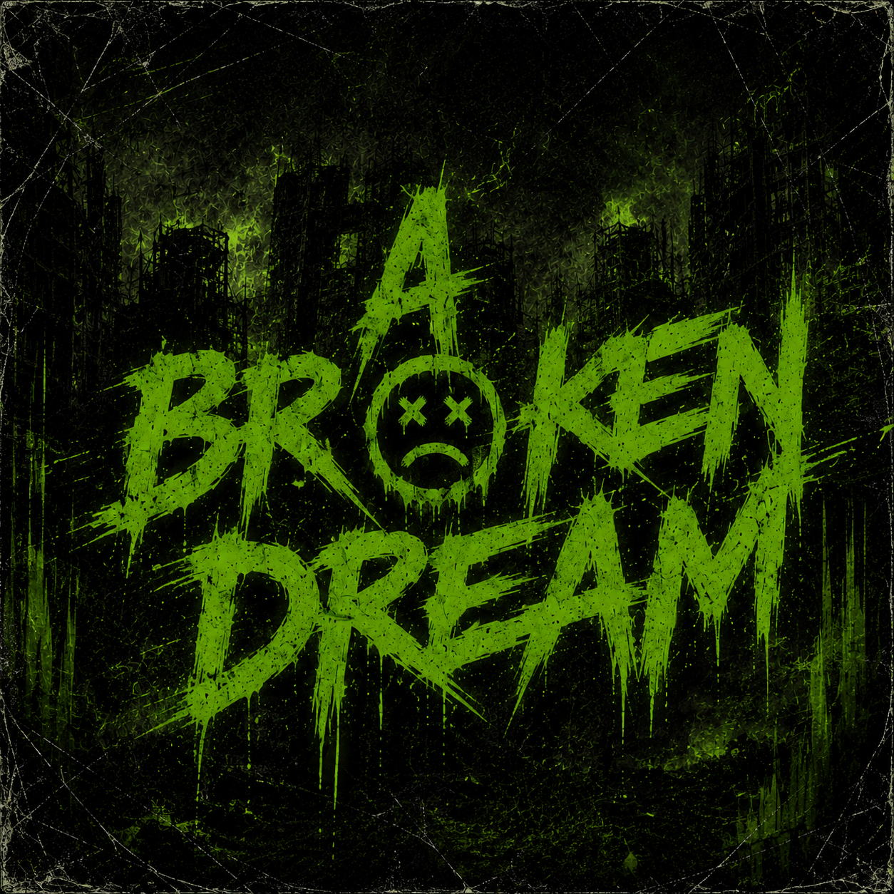

Featured release
A Broken Dream · 2026

Album artist · A Broken Dream
Osama is one half of the album artist credit behind A Broken Dream, bringing the record's dark, direct voice to the core tracklist. His presence anchors the first Melation Sound release.
A Broken Dream · 2026
MT, Adam, and Bassam